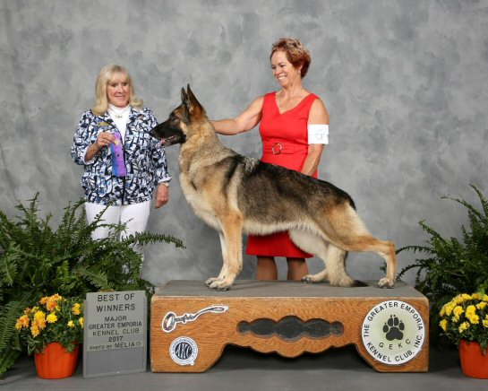
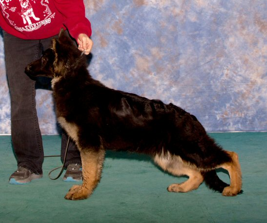
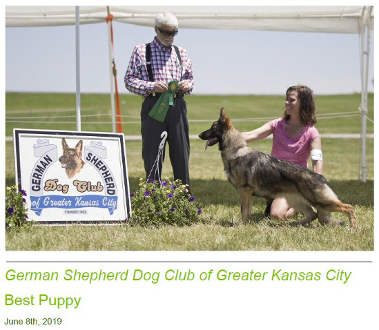
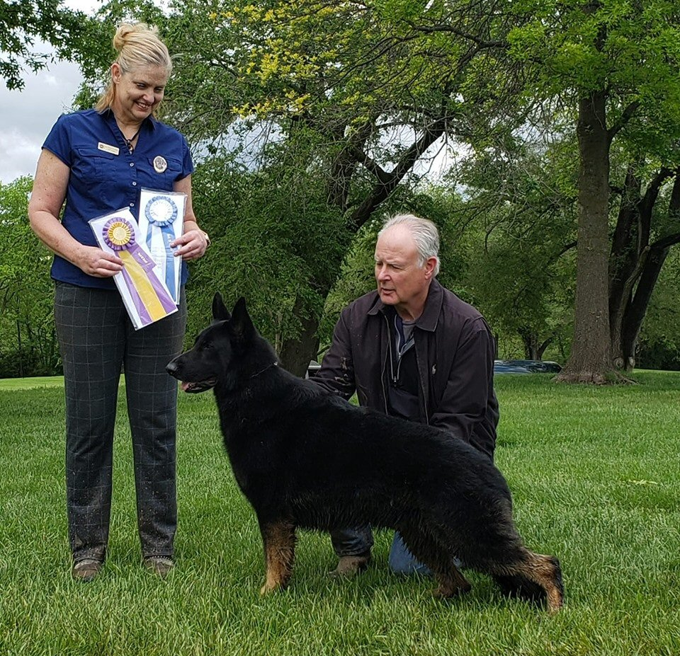
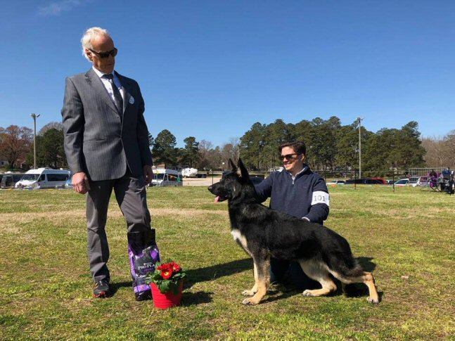
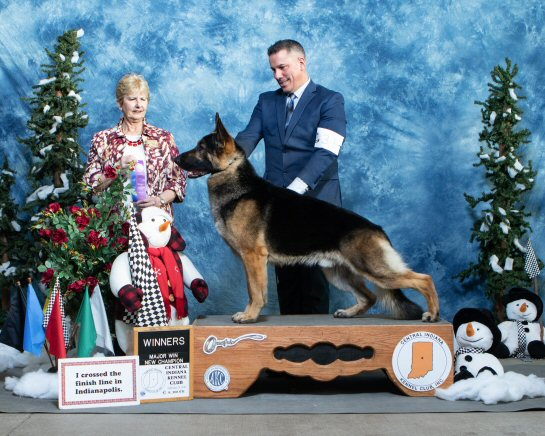

BULLETIN BOARD
Member's Brag Bulletin Board

CH Guardians Gold Medal V Rochill OFA H/E/TH
"Blondie"

Breeder/Owners: Jayne Faupl & Julia Foster
Handler: Julia Foster-Hess
Sire: GCH Rochills Jax V Guardian Farm HSAds HXAs CA
Dam: Guardians Olympic Gold V Rochill OFA H/E
Paducah KC
4/6/19 Select Bitch under Houston Clark
4/7/19 Select Bitch under Jon Cole
Janesville Beloit KC
5/4/19 Best Op under R.E. Lake
Badgerland KC
5/3/19 Select Bitch under Sulie Greendale-Paveza
5/5/19 Select Bitch under Linda Robey
Illinois Valley KC of Peoria
5/24/19 Best of Breed under Mrs. D. L. Melgreen
Mid Del Tinker KC
6/8/19 Select Bitch (major) under Patricia Trotter
Lawton Dog Fanciers
6/29/19 Best Op (major) under W. C. Stebbins
Waukesha KC
7/27/19 Select Bitch (major) under Michael Gelinas
7/28/19 Select Bitch (major) under Marilyn Van Vleidt
Guardians 2Kiss A Thief V Rochill
"Vee"

Owners: Jayne Faupl & Julia Foster
Breeders: Jayne Faupl, Julia Foster-Hess, Laura Shearin
Sire: CH Charbo Jalyn's Xtortionist Tanbark Lauguin OFA H/E
Dam: CH Guardians Gold Medal V Rochill OFA H/E/Th
Janesville Beloit KC
5/4/19 1st 6-9 month puppy, reserve winner's bitch under R. E. Lake
Badgerland KC
5/3/19 1st 6-9 month puppy under Sulie Greendale-Paveza
5/5/19 1st 6-9 month puppy under Linda Robey
Illinois Valley KC of Peoria
5/26/19 1st 6-9 month puppy, reserve winner's bitch under James Moses
Waukesha KC
7/27/19 1st 9-12 month puppy under Michael Gelinas
7/28/19 1st 9-12 month puppy under Marilyn Van Vleit
Guardians NoNo Noelle V Rochill
"Noelle"

Breeder/Owners Jayne Faupl, Julia Foster-Hess
Sire: CH George Creeks Out of This World OFA H/E/Th
Dam: CH Guardians Gold Medal V Rochill OFA H/E/Th
Corn Belt KC
5/27/19 1st 6-9 month puppy, Reserve winner's bitch under Cindy Meyer
German Shepherd Dog Club of Greater KC
6/8/19 1st 6-9 month puppy, Best Puppy under Randy Chestnut
Lawton Dog Fanciers
6/29/19 1st 6-9 month puppy, (major) reserve winners bitch under W. C. Stebbins
"Bruno"

Faithrock Maverick
May 12, 2019 - Bruno was awarded Winner's, Best of Winners and Best of Breed.
GSDCSTL Spring Specialty @ Purina Farms under judge Christie Halliday.
Bruno needs one more major to finish his CH
Thank you Diane Brown and Larry Rock for handling Bruno.
Sire: RBIS GCHB Class Act's Shot Through The Heart Windfall-Hillside RN CGC TC "Jovi"
x
Dam: FaithRock You've Got A Friend "Kelly"
Bred by Terry and Larry Rock and Rita Rooney
Owned and Loved by Linda Swan Van Vickel and Terry Rock
4/7/2019
Back to back Winners Bitch & Best of Winners for Baretta this weekend!
4/6 /2019
Yesterday was a point and today was a 3 pt major!!
Thank you judges Houston Clark and Jon Cole!
Elizabeth Renee Stiefferman handled her to winners bitch and Kara Janiszak covered her in Breed!

Baretta is owned by Gail Stiefferman, Deborah Stern and Herman Stiefferman.
Bred by Sandy Anderson & Jason Duin
So proud of our 20 month old girl!!!
4/6/2019
❤️Hazel goes Herding Group 2❤️
Hazel Group 2

Thank you judges Mr. Houston Clark (Breed) and Mr. Jon Cole (Group)!
Officially- Group Placing Can. Sel. BOF RMB MBISS BPIS MBPISS CH Forest Knolls Hazelnut V Winsome
Owner/Breeder/Handler- Elizabeth Renee Stiefferman
Co-Breeders- Frank & Kris Fasano — with Gail Stiefferman, Scott C Hotaling and Herman Stiefferman.
3/24/19
Valleyview Faith Rock Remember When
" Jackson"

Jackson WD & BOW, Judge: Richard Lortie, Handled by Liv Calabrese
3/23/19: Thank you judge Steve Bloom for awarding Jackson Winner's Dog and Best of Winners from the 6-9 puppy class.
3/24/19: Thank you to judge Richard Lortie for awarding Jackson Best Male and Best Opposite Futurity.
Thank you Liv Calabrese for expertly handling Jackson.
Sire: AM GCH CH/CAN CH Fathrock Caralon Good Vibrations, CD, RN, CHIC, HIC, CHIC,TC, DM Clear (frozen semen)
x
Dam: Valley View Hugs and Kisses
Bred by: Christine Leeka & Terry Rock
Owned by: Terry & Larry Rock and Christine Leeka
BOF CH Faithrock Wyatt Earp v Tin Roof RN TC
"Ruger"

BOF CH Faithrock Wyatt Earp v Tin Roof RN TC
February 9, 2019 - Ruger finishing his championship in Indianapolis under judge Karen Hynek with his 3rd major.
Thank you Jeffrey Pyle for handling Ruger.
Sire: RBIS GCHB Class Act's Shot Through The Heart Windfall-Hillside RN CGC TC "Jovi"
x
Dam: FaithRock You've Got A Friend "Kelly"
Bred by Terry and Larry Rock and Rita Rooney
Owned and Loved by Laura and Tony Marrocco and Terry Rock